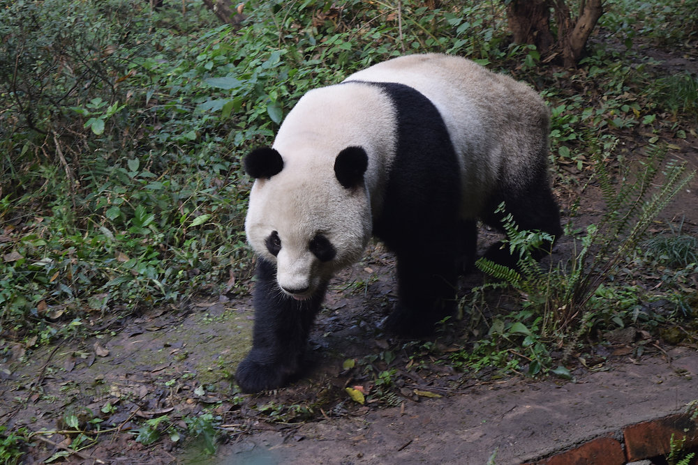

|
Habitat loss is the main threat to the pandas survival.
But habitat loss and fragmentation remain the gravest threats to the survival of the species. A large proportion of the panda's habitat has already been lost: logged for timber and fuel wood, or cleared for agriculture and infrastructure to meet the needs of the area's booming population. |
 |
The loss and fragmentation of panda habitats disrupt their natural behavior, making it difficult for pandas to find suitable food sources, establish territories, and maintain healthy populations. This disruption also affects their ability to reproduce and interact with other pandas, leading to a decline in their overall population. |
|
 |
While it is rare for poachers to intentionally kill a panda, some are accidentally injured or killed by traps and snares set for other animals, such as musk deer and black bears. Working to sustain the natural world for the benefit of people and nature.However some poaching of pandas still occurs. Hunting the animals for their fur has declined due to strict laws and greater public awareness of the pandas protected status. |
 |
Climate change could affect the potential distributions of bamboo species that pandas feed on, and it could also affect pandas behaviors and physiology.· Climate change studies predict that giant panda habitats will become more fragmented. We further simulate the extinction risks under scenarios of future climate change. |